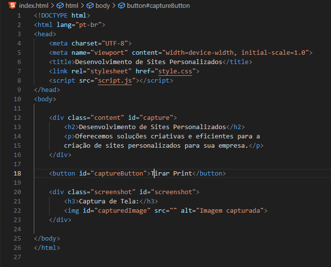

Descubra nossos serviços de criação de websites e projetos personalizados para instituições e negócios.
Oferecemos workshops interativos sobre criação e otimização de websites, abordando temas como design responsivo, estrutura de rede e bancos de dados.
Oferecemos serviços de desenvolvimento de sites, tanto para sites de vendas, ou até mesmo um pessoal. Procuramos experiência do usuário.
Usamos tecnologias modernas, como bancos de dados SQL e estruturas de rede seguras, para garantir a melhor performance e segurança.
Um exemplo de um codigo simples para captura de tela